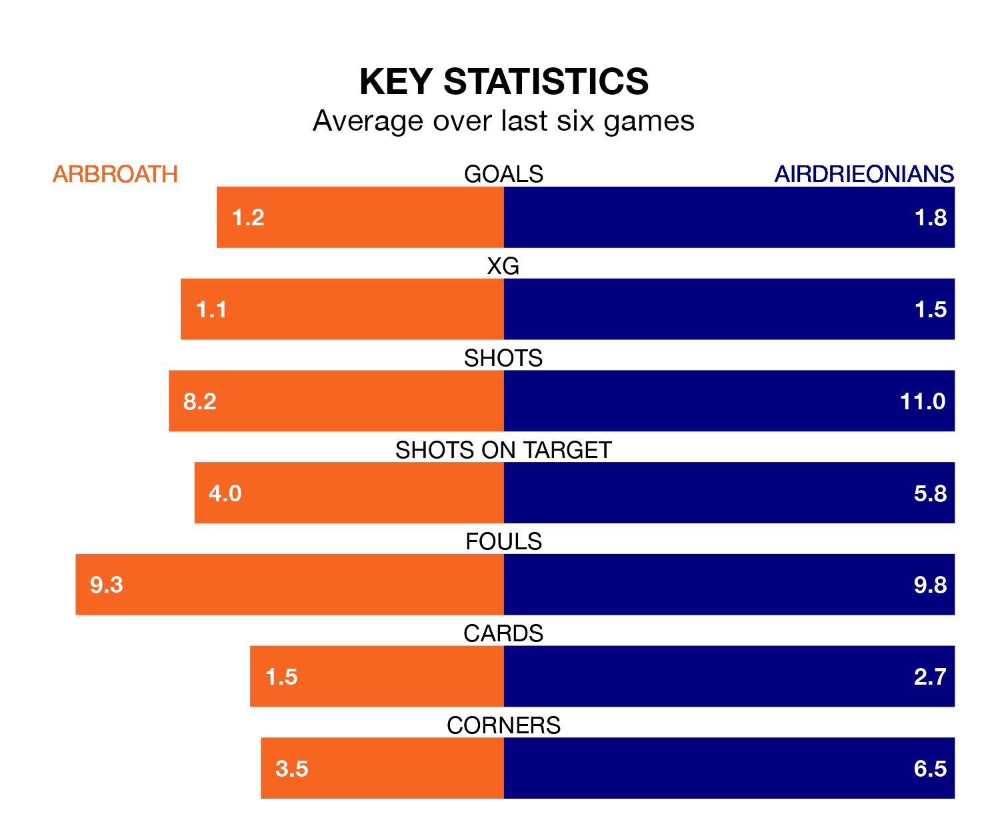

Airdrieonians are strong favourites to take all three points despite Arbroath's home advantage in Tuesday's late match at Gayfield Park.
*Betting Company* are offering odds of 1.66 on Airdrieonians sealing the win, with the visitors sitting sixth in the Championship table.
Arbroath, who are 10th in the league and 16 points behind Airdrieonians, are priced at 4.35 to win. A draw is set at 3.8.
In Joshua Rae, Airdrieonians can rely on one of the league's safest pair of hands. He has kept nine clean sheets in his 26 appearances this season, and only one other 'keeper – Dundee United's Jack Walton – has been able to prevent the opposition scoring on more occasions in the Championship.
In Arbroath's net, Derek Gaston has three clean sheets in 23 games. He has conceded a goal every 45 minutes, twice as often as the 89 minutes between goals for Rae.
The hosts are in bad form in the Championship, with one win and five losses from their last six games.
With three wins and two draws over that period, the away side's form is much better – they have taken 11 points from 18, compared to Arbroath's three.
In the last 10 years, Arbroath and Airdrieonians have played each other on 13 occasions. Arbroath won seven of them, Airdrieonians four, and they drew twice.
On average, Arbroath scored 2.0 goals and Airdrieonians 1.3 in those matches.
Their last meeting was on March 16, when Airdrieonians won 5-2 at home.
With 32 goals in 30 games so far this season, Arbroath are the league's lowest scorers with 1.1 goals per game. And they are conceding more than average, letting in 68 goals at a rate of 2.3 per game.
Airdrieonians are also below average scorers, with 1.2 goals per game, compared to a league average of 1.4. They have also conceded 1.2 goals per game.
Arbroath's last match was on Saturday, a 3-2 loss against Dunfermline Athletic, with Scott Stewart getting the goals for Arbroath.
Airdrieonians lost 2-1 against Ayr United last time out, on Friday, with Josh O'Connor on the scoresheet.
Updated: 10:31 (UTC), 31/03/24